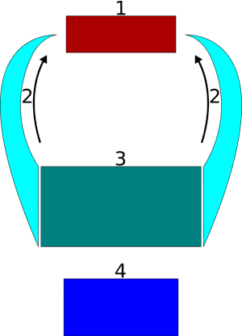
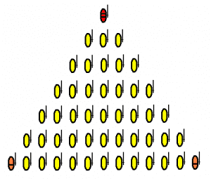
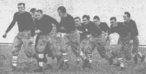
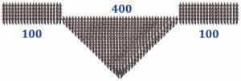

< < < Back
4 Ancient Tactics For Modern Streetfighting – Return Of Kings
I don’t think I need to tell anybody about the decidedly Weimar-esque events that occurred in Sacramento, California a couple of weeks ago, in which fascists and communists battled in the streets-with the rightists managing to win a 10-to-1 underdog victory that, despite my disagreements with Matthew Heimbach’s political philosophy—to put it mildly—was frankly an inspiring and heartening one.
Seeing as we have apparently entered a cultural zeitgeist in which street fighting paramilitaries are going to affect political change through hand-to-hand combat, I thought it would be best to train ourselves in the event of attack (for purposes of defense of course, we at Return of Kings would never advocate aggression against our enemies). With that being said, the tips on general fitness and martial arts are just the first steps of forming an effective fighting force.
One has often heard the phrase “strength in numbers”, but as the events of the “Battle of Sacramento” showed, having mere numerical superiority will not guarantee victory. Instead, what must be learned and trained is tactical superiority.
Tactics and Strategies
These are two terms that are commonly used in military, gaming, or sporting contexts, but are often misunderstood. To put it very simply, tactics are short term techniques for winning the battle that you are immediately participating in, whereas strategies are the techniques used to achieve a long term goal. To put it in Return of Kings-centric terms, disinformation was a tactic in Operation Medusa, wherein the long term strategy was to create discord in the ranks of Social Justice Warriors so Roosh could speak unmolested.
While the long term strategy for our victory over the Cathedral is perhaps in its embryonic stages at the moment, tactics for fighting the useful idiots don’t need to be invented, for they already exist, and have successfully been used for thousands of years
In my opinion, if you wish to learn how to fight as a unit of modern day men-at-arms, don’t learn from the Antifas, the black flag, and any other organization of pseudo-rebellious bourgeois manchildren. Instead, learn from ancient men whose lives literally depended on their ability to function as a team. Indeed, these tactics are still used by riot police today:
1. The Shield Wall
Probably the simplest of the tactics that will be discussed today—and that is of course a relative term—because it is a fixed fortification rather than a movement.
To start, you obviously need some shields, preferably ones that are uniform in size. Seeing as it is probably difficult to get proper shields (made either of iron or hard plastic), my suggestion is to create ad-hoc tower shields by cutting large cylindrical garbage cans or 55 gallon drums in half.
Once you and your motley crew have been properly outfitted, stand shoulder to shoulder and place your shields in front of you, each shield overlapping the one beside it. An example of this can be seen in the famous Mesopotamian Vulture Stele below.

As with most things, your group must practice this maneuver so you can draw your shields as one. With more practice, you will be able to move as one, and even swing blunt objects in united vertical swings (for obvious reasons, turning this into a phalanx with spears is to be frowned upon). But even without weapons, this provides a formidable defense—not to mention that the shield can be used as a weapon in its own right.
2. Flanking
Once you’ve figured out how to move as a collective unit, the question that arises is: where should you move? Preferably, towards your enemies, but the simple concept of “forward” can be improved upon with flanking. This is, as the name implies, maneuvering in a way that presents your front with the vulnerable side or back of the opponent (or, if you have the numbers, both sides of the opponent in a technique referred to as the pincer movement).
This is not a formation per se, but a movement that can be done in conjunction with formations such as the shield wall or the flying wedge detailed below. Speaking in hypothetical terms that assume a sufficient number of fighters, I would personally recommend the Zulu “buffalo horn” formation characteristic of Shaka’s imperial reforms of the 19th century: it creates a pincer movement AND a shield wall below the “pincers”, with auxiliaries capable of free movement wherever necessary

The major downside to this is that it will require much more drilling and training than the aforementioned shield wall.
3. The Flying Wedge
This is one you might actually see practiced today if you observe footage of riot police breaking up crowds of people. Or maybe you remember reading about it in The Gallic Wars by Julius Caesar. Or perhaps you are familiar with it being banned from American football and Rugby due to it having killed several players in the early 20th century-a grim reminder of its efficacy.
This formation is of a moderate difficulty between the simple shield wall and the more complex pincer maneuver, and the bulk of difficulty in training will involve getting each person into their proper place and forming the triangle shape. Once this is accomplished, moving forward will presumably be relatively simple.

This formation should best be done with the biggest, strongest man forming the point, with a commander in the back and various rankers in between. This champion will penetrate the lines while his sides are protected by the sides of the triangle. For added protection, you can link shields while on the run, or even link arms, as seen below in a picture of the 1896 Yale football team. Either way, the momentum of each person will push each other person forward and add to the power of the formation.

4. Auxiliaries
In ancient times, what would often support one of these formations were auxiliary fighters, typically peltists, archers, or general support, as seen in the svinfylking variation of the flying wedge

As slings and bows are classified as deadly weapons, I would refrain from bringing them. Instead, have auxiliaries to carry injured people out of the fray or deal with the police and media.
Conclusion
It goes without saying that I don’t have much experience in team hand-to-hand combat-the closest I’ve come to it is playing football in high school. However, I chose the tactics detailed here because I have read of them being successfully used by men whose lives depended on them. As we enter turbulent times, this admittedly slightly LARPy article, combined with lots of practice of its insights, might give you an edge over a horde standing against you.
Read More: Does Ancient Muslim Wisdom Have Answers To Modern Western Problems?